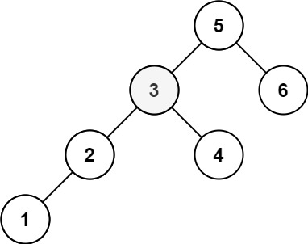

230. 二叉搜索树中第 K 小的元素
题目与约束
给定一个二叉搜索树的根节点 root ，和一个整数 k ，请你设计一个算法查找其中第 k小的元素（k 从 1 开始计数）。
示例 1：

输入：root = [3,1,4,null,2], k = 1
输出：1
示例 2：

输入：root = [5,3,6,2,4,null,null,1], k = 3
输出：3
提示：
- 树中的节点数为
n。 1 <= k <= n <= 1040 <= Node.val <= 104
进阶：如果二叉搜索树经常被修改（插入/删除操作）并且你需要频繁地查找第 k 小的值，你将如何优化算法？
Java 完整推导
Java 核心不变量
BST 中序序列严格递增。
完整推导
思路推导
-
直觉与痛点（暴力解法）：
最容易想到的办法是：管它是什么树，直接用一个大数组把整棵树的所有节点值都装进去，然后用
Collections.sort()排个序，最后返回array[k-1]。痛点：空间复杂度变成了 O(N)，且完全浪费了二叉搜索树自带的有序性。这种没有技术含量的解法在面试中只能拿安慰分。
-
破局思路（中序压路机 + 计数器提前止损）：
再次请出我们的终极定理：二叉搜索树的中序遍历（左 -> 中 -> 右）结果，天然就是一个严格递增的有序序列。
所以，“找第 k 小的元素”，本质上就是当中序遍历的压路机开过去时，数一数它是第几个被压到的节点。
- 我们不需要把所有数字存下来。
- 我们只需要在外面挂一个计数器
count = 0。 - 每次中序遍历走到“中”（即处理当前节点）的时候，让
count++。 - 当发现
count == k时，说明当前节点就是我们要找的真命天子！立刻记录答案，并果断终止后续的所有遍历（提前止损）。
Java 实现（满分全局变量递归版）
/**
* Definition for a binary tree node.
* public class TreeNode {
* int val;
* TreeNode left;
* TreeNode right;
* TreeNode() {}
* TreeNode(int val) { this.val = val; }
* TreeNode(int val, TreeNode left, TreeNode right) {
* this.val = val;
* this.left = left;
* this.right = right;
* }
* }
*/
class Solution {
// 全局计数器：记录当前是第几小的元素
private int count = 0;
// 全局结果：用来存放最终找到的第 k 小的值
private int result = -1;
public int kthSmallest(TreeNode root, int k) {
traverse(root, k);
return result;
}
// 经典中序遍历：左 -> 中 -> 右
private void traverse(TreeNode root, int k) {
// 🌟 核心优化（提前止损）：如果当前节点为空，或者我们已经找到答案了，直接返回，不再浪费算力！
if (root == null || result != -1) {
return;
}
// 1. 【左】先去左子树里找
traverse(root.left, k);
// 2. 【中】处理当前节点
count++; // 计数器加 1
if (count == k) {
result = root.val; // 找到了，把值存在结果里
return; // 触发上面的提前止损开关
}
// 3. 【右】再去右子树里找
traverse(root.right, k);
}
}
复杂度
- 时间复杂度：O(H + k)。其中 H 是树的高度。我们一路上需要先钻到最左下角的叶子节点（消耗 O(H) 的时间），然后往回走，访问 k 个节点就会触发提前终止。在平均情况下，时间复杂度大约是极速的 O(log N + k)。
- 空间复杂度：O(H)。消耗在系统递归调用栈上。完全没有使用额外的数组空间。
- 面试追问：“如果这棵二叉搜索树经常被修改（频繁执行插入、删除操作），并且你需要频繁地查找第 k 小的元素，你该怎么优化算法？”
- 普通回答：那每次修改后，我都重新跑一遍上面的中序遍历。
- 满分抢答（直击数据结构本质）：这属于力扣官方的“进阶问题”。如果频繁修改加查询，上面的方法每次都要重新遍历，效率太低。
- 终极优化方案：我们可以重构二叉树的节点结构，在每个
TreeNode里增加一个属性：size（以当前节点为根的子树的节点总总数）。 - 当我们查找第 k 小的元素时，由于我们知道左子树的节点个数leftSize：- 如果
k == leftSize + 1，说明根节点就是第 k 小的，直接 O(1) 返回。 - 如果
k <= leftSize，说明第 k 小的元素一定藏在左子树里，我们直接去左子树找。 - 如果
k > leftSize + 1，说明在左边不够，我们要去右子树里找第k - leftSize - 1小的元素。 - 结论：通过引入
size属性，每次查找的时间复杂度会瞬间从 O(N) 优化思路到 O(H)（即直接顺着树高一路劈下去，不需要任何中序遍历）。这就把问题完美转化为了红黑树底层的Rank（排名）问题！
- 如果
Python 完整推导
把 BST 看成一列排好的数
二叉搜索树最重要的顺序性质是：中序遍历会依次输出左子树、根、右子树，因此得到严格递增序列。第 k 小就是这列数中的第 k 个，不需要先把全部值存入列表再取下标。
代码模拟中序过程：stack 保存还没有访问的祖先，count 记录已经弹出的节点数。每次一路向左把路径压栈；无路可走时弹出最左节点，这才会产生下一个有序值。
以 [3,1,4,None,2]、k=2 走一遍
- 根 3 入栈，转到左孩子 1；1 再入栈，转到空位置。此时
stack = [3,1]。 - 无路可走，先弹出 1，
count = 1；它不是第 2 小，于是转向 1 的右孩子 2。 - 内层循环把 2 入栈后立即弹出，
count = 2，与 k 相等，返回2。
中序顺序确实是 1,2,3,4。代码提前停止，因此没有继续弹出祖先 3，也没有访问右子树的 4。
如果 k=1，第一个弹出的最左节点就会立即返回；如果 k 等于节点总数，则直到最后一个右端节点才结束，正好说明 O(h+k) 的推进边界。命中后无需继续生成更大的序列元素，也不会多做栈外的排序。树中的重复值不在 BST 合法输入里，因此“第 k 个弹出”与“第 k 小”一致。
Python 实现
参考来源：经典解法实现
沿用旧 Python/Java 的 BST 中序计数与提前终止思路；递归式改为显式栈以稳定处理深树，变量和注释由本站整理。
from typing import Optional
class Solution:
def kthSmallest(self, root: Optional[TreeNode], k: int) -> int:
stack = []
current = root
count = 0
while current or stack:
while current:
stack.append(current)
current = current.left
current = stack.pop()
count += 1
if count == k:
return current.val
current = current.right
API 动作与提前返回
stack.append(current)后立刻current = current.left，表示当前节点还要等左子树完成。stack.pop()取出的才是中序序列里的下一个值，因此 count 在这之后增加。- 命中时返回
current.val，不返回节点本身，也不再处理它的右子树。
如果把计数写在压栈处，栈中的祖先会被提前计算，顺序就不是中序。有效输入保证最终能数到第 k 个，所以命中分支之外无须伪造错误值。
复杂度
- 时间复杂度：
O(h+k)。 - 空间复杂度：
O(h)。
到最左端及中序推进最多访问 h+k 个栈状态，时间 O(h+k)；栈最多保存树高 h 个节点，空间 O(h)。
力扣原题
C++ 实现
实现来源：经典解法实现
- BST 中序遍历天然升序
- 中序访问到第 k 个元素即为答案
- 递归左 → 计数 → 右，计数到 k 提前终止
class Solution {
int count = 0, answer = 0, k = 0;
public:
void go(TreeNode* node) {
if (!node || answer) return;
go(node->left);
if (++count == k) { answer = node->val; return; }
go(node->right);
}
int kthSmallest(TreeNode* root, int k) {
this->k = k;
go(root);
return answer;
}
};
Go 实现
实现来源：经典解法实现
- BST 中序遍历天然升序
- 中序访问到第 k 个元素即为答案
- 递归左 → 计数 → 右，计数到 k 提前终止
func kthSmallest(root *TreeNode, k int) int {
count, answer := 0, 0
var go func(node *TreeNode)
go = func(node *TreeNode) {
if node == nil || answer != 0 { return }
go(node.Left)
count++
if count == k { answer = node.Val; return }
go(node.Right)
}
go(root)
return answer
}
C 实现
实现来源：经典解法实现
- BST 中序遍历天然升序
- 中序访问到第 k 个元素即为答案
- 递归左 → 计数 → 右，计数到 k 提前终止
int count = 0, answer = 0, target = 0;
void go(struct TreeNode* node) {
if (!node || answer) return;
go(node->left);
if (++count == target) { answer = node->val; return; }
go(node->right);
}
int kthSmallest(struct TreeNode* root, int k) {
count = 0; answer = 0; target = k;
go(root);
return answer;
}